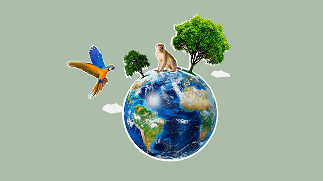

ajude nos a salvar nosso bem mais preciso que o a nossa natureza

ja são quase 200 campos de futebol em matas que estão sendo desmatada somente na amazonia
florestas esta passando pela pior epoca de desmatamento da decada.
E nossas proprias autoridades, não fazem nada para inibir estas atrocidades que esta fazendo com a nossa biodiversidade em nosso pais
militares que eram para ajudar na segurança de nossas florestas estão aproveitando da situação para lucrar com proprina e muito mais